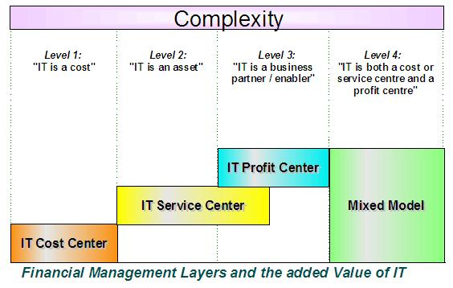
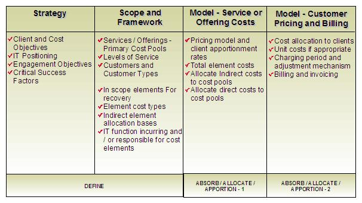

| Artifact: IT Accounting Model
(BUS 429)
|
|
 |
| The IT accounting model (Sometimes referred to as Charge-back model) is both a strategic and operational management-controlling tool and provides a framework, mechanism for costing and subsequent pricing and charging the provision of services to clients. |
Domains: Business Value & Financials
Work Product Kinds: Model |
|
Purpose
The IT Accounting work product provides a framework, mechanism for:
-
Appreciating individual and overall costs of providing IT services.
-
Enables (or otherwise) customer relationship development through cost transparency.
-
Charging for IT services provided to the recipients of such services.
-
Providing a baseline by which make or buy decisions can be made with respect to IT service provision.
The ultimate aims for an IT accounting system; that needs to be reflected in the development of an IT accounting work
product are:
-
Part of the overall definition and development of services.
-
Transparency of used services / products or transactions.
-
Cost responsibility for used services / products or transactions.
-
Incentive to behave in a cost conscious / cost sensitive manner.
-
Control of IT costs.
-
Support and simplification of service price calculation and ultimate service charging.
Critical Success Factors:
-
Understandable and relevant to users / clients.
-
Predictable results.
-
Realistic to manage in terms of resource and cost.
-
Complementary to company culture and management controls.
-
Clients have flexibility to control and chose their charges through usage charging.
-
Clients must be able to see benefits.
-
Auditable and repeatable.
-
Positioned for future growth and change.
-
Process and automation-oriented.
|
Description
| Main Description | The IT Accounting Model generally takes the form of a spreadsheet in its development and is a further development /
extension of the cost model work product. Without the latter construction an IT accounting model cannot be developed. The
IT accounting model generally contains:
-
Individual in-scope elements of cost with costs applied (from the cost model).
-
A set of defined services with overall service costs applied / absorbed (See below for definition).
-
A set of absorption / allocation / apportionment bases to enable the appropriate application of element costs to
defined services.
-
A set of absorption / allocation / apportionment bases for appropriate distribution of service costs to clients
(i.e. the proportion of a service that a particular set of users should reasonably and equitability pay).
As such allocation is done twice, the first time in terms of costs to services, the second iteration is of these
services to clients. As such IT accounting is often referred to as a double absorption or allocation method.
When the IT Accounting work product is combined with an appropriate management process the IT accounting model provides
the foundation for a cost measurement, management control and reporting system.
The definition of ‘service’ within such a construct is variable. It depends upon client accounting requirements and
level of service provision maturity. As such service can refer to the provision of:
-
Technology components or individual components / products such as storage or processing power etc.
-
Organizational functions or cost centers such as application maintenance and support, technical support and help
desk.
-
Processes such as end user support, problem management, backup and recovery management, project management,
application development etc.
-
True end-to-end service composed of appropriate processes, organizational components and technology. Examples here
may be Solution build which would incorporate all aspects of business, application and infrastructure to provide a
particular service, User support which could be a centralized incident management service, a combination of local
and centralized customer contact support or a variations of this depending upon the service provided. Please refer
to the ‘IT Service Reference Model’ reference file attached to the derive IT accounting model task for further
detail and a framework for service derivation and definition.
Note that as the ‘sophistication’ of service definition increases so does the cost of both development and maintenance
of such a system, as such this needs to be a consideration in the development of an IT accounting model.
This work product mainly focuses on ‘internal’ IT accounting where services are costed and charged on a ‘non profit’
basis, as such it deals with functions within organizations that are deemed ‘cost or service centers’. Such a model
could be adapted to consider where the Accounting system is being developed for a ‘profit center’. Here the provider of
services recoveries both costs and revenue. This would however require a greater degree of sophistication,
incorporating pricing techniques such as Cost Plus Pricing, Cost-volume-profit analysis, Target costing, Skimming and
penetration policies, and Customer profitability analysis.

|
| Brief Outline |
IT accounting models are extensions of cost models that also require the same notation described in the cost model work
product and further extensions to this as described below. They are typically spreadsheets created using either Lotus
123 or Microsoft Excel, following standard spreadsheet formats and conventions.
Note that the words allocation, absorption and apportionment are interchangeable within this scheme.
|
Charge-back
|
Allocation of charges to clients, usually done at the end of an accounting period.
|
|
Costing
|
Establishing the cost of IT delivery by process or service and products
|
|
Pricing
|
Setting of prices to charge for services. If costs are known and the level of profit agreed; prices are
then set.
|
|
Charging
|
The process of "billing" for usage once the price of the service has been set.
|
|
Cost Driver
|
The reason costs are incurred; e.g. transaction entry, mounting tapes, security management.
|
|
Cost Centers
|
Organizational entities those are responsible for the costs within their areas of responsibility.
|
|
Cost Pools
|
Major groups of resources to which costs are assigned and from which charges are distributed.
|
|
Cost Category
|
A grouping of cost items or elements into a higher level. For example the items ‘Salary & Wage’, ‘Other
Compensation’, Fringe Benefits’, ‘contract & temp’ are grouped into the category ‘Personnel Service
Cost’.
|
|
Cost Item or Element
|
A set of costs at the lowest level for budget planning, tracking and identification Examples:
· Salary & Wage
· Other Compensation
· Fringe Benefits
· Contract & Temp
|
|
Billable Units
|
Billable units are chosen for each cost pool to achieve the allocation approach to be taken. All relevant
costs within a cost pool should be recovered based on the units to be charged. The units by which IT costs
are calculated and charged, i.e. CPU time, DASD storage, voice call minutes, etc.
|
|
Usage Based Charging
|
A method of charging departments for their use of IT resource.
|
|
Standard Costing
|
Pricing of usage based on a unit of work at a rate that is fixed for some period of time, usually a year or
quarter.
|
|
Resource unit Costing
|
This method of charge-back computes charges based on resource usage that can be directly identified with a
user. (Resource unit costing is the same as usage-based costing; it can be based on either standard or
variable rates.)
|
|
Proportional allocation
|
Allocation of costs to organizational entities based on each organization’s proportional usage or
participation based on a metric, i.e. sales, membership, number of FTEs.
|
|
Direct allocation
|
The method of charging based on direct usage or direct benefit, usually for a resource that is not shared.
|
|
Activity Based Costing
|
A method of tracing the costs incurred by various I/T activities and associating them with services
provided and/or to I/T customers. (-> Refer to relevant Technique Paper)
|
|
Illustrations
Key Considerations
The graphic illustrated below highlights the major activities that need to be performed in order to derive an IT
accounting model.

Strategy
Prior to embarking on an accounting engagement, the clients cost objectives need to be clearly articulated and
understood. For instance the development of a sophisticated accounting model that requires an expensive management
system to run and maintain would be totally inappropriate if cost reduction was an objective of an IT accounting
engagement. As part of this exercise IT needs to be appropriately positioned on a strategic framework, such as the
strategic intent model (refer to the IT Strategic Value Framework work product). This will strongly indicate whether IT
is cost focused, service focused, or a partner and enabler; also whether IT is a cost, profit or mixed center, which
has strong implications to both the required cost, sophistication and style of IT accounting Model to be
developed.
Scope and Framework
If services are not well understood or defined then this needs to be remedied. Such an undertaking represents a
significant effort and engagement all of its own. Refer to the ‘IT Service Reference Model’ reference file attached to
the derive IT accounting model task for further detail and a framework for service derivation and definition.
Essentially a cost model work product needs to be developed as a pre-cursor to the development of an IT accounting
model.
Model - Service or Offering Costs
Essentially this is the first level of allocation, where element costs are allocated in part or whole to defined
services.
Model - Customer Pricing and Billing
The second level of allocation occurs here. Overall service costs are distributed equitably between users of the
service. Note that it is absolutely critical to get appropriate buy in to these allocations. This may need to be in the
form of effective executive sponsorship and ensuring that a strong audit trail and rationale is evident for allocation
decisions, appropriate service pricing is then derived and a mechanism for billing.
Note also:
-
Skeleton accounting models as with cost models are normally built prior to data collection. The actual numbers
collected are then added into the model, as they are collected. The skeleton model also normally contains an
initial set of formula that is then refined as the data is populated.
-
The development of an IT accounting model is only a start, in order to operationalize this process, tool and
organizational development needs to be pursued. The accounting model only provides a framework by which this can be
achieved.
-
As with cost models, IT accounting models are often used in organizationally sensitive situations (someone is
trying to sell something and / or individuals or groups of people will be disadvantaged). Obtaining “true” figures
to populate the model is often difficult and time consuming, the higher the level of experience and comparison /
validation sources the greater chance of using figures that can be “defended” and accepted.
|
Tailoring
| Impact of not having | The IT accounting model is very specific, it is required to equitably capture costs of individual services and subsequently
price and charge these costs to users of the service. This cannot be achieved without this work product.
It tends to be a requirement in service definition and development projects, without understanding the costs of a
service it is difficult to gauge overall benefit. As such a key information point is missing in determining both strategic
and operational directions of developed services. |
| Reasons for not needing | The only reason for not needing this work product is if the Task being performed does not require IT service costs and
subsequent customer charging to be analyzed. |
More Information
| Supporting Materials |
|
| Estimation Considerations |
|
© Copyright IBM Corp. 1987, 2012 All Rights Reserved
Property of IBM
These materials are intended only for use as part of an IBM engagement |
|